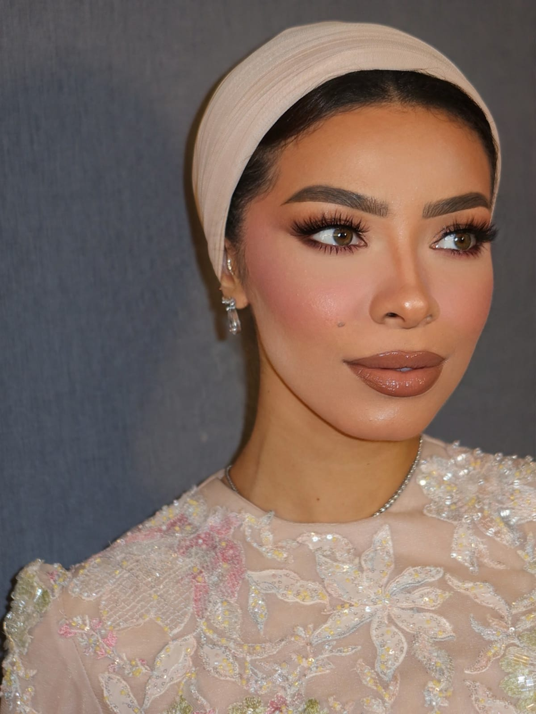
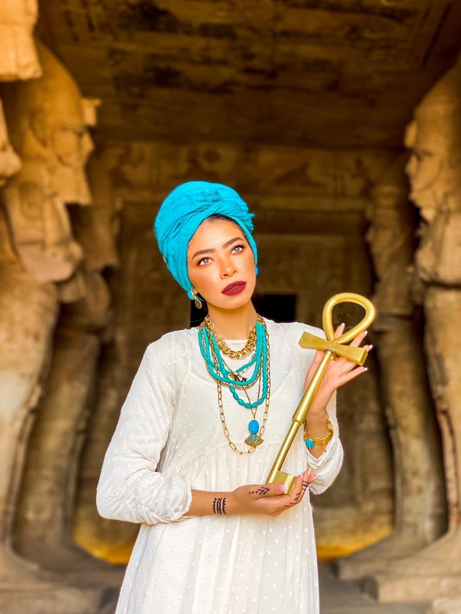
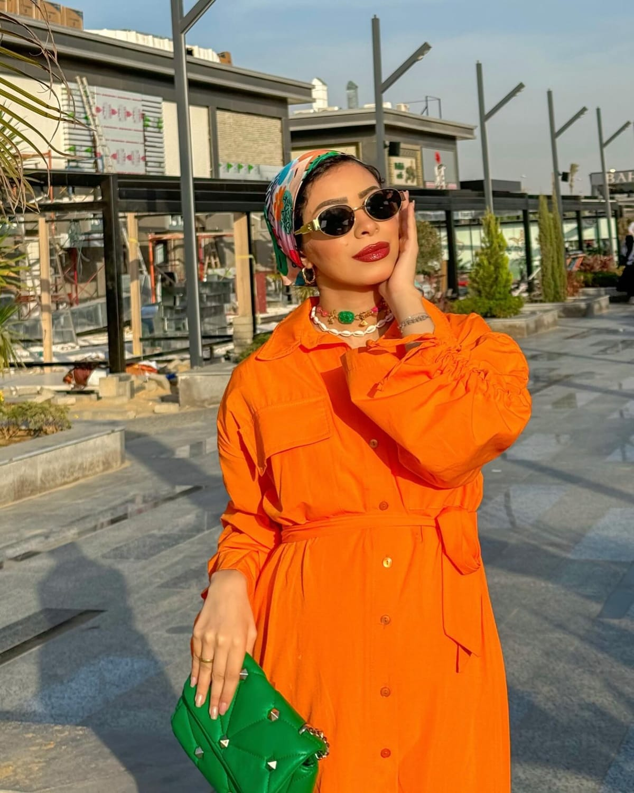

Three different looks built from the same facts: eight years of posting, 33 brand partners (15 of them repeat clients), 10 million followers on three platforms, and a TV commercial. All photography is new.

A Didone masthead, cover lines for the numbers, and full-colour studio portraits. The brand book with her face and their logo stays the centrepiece; a career line adds the track record.
Open Cover →
Near-black, sand type, one terracotta. Seven chapters by destination: Egypt, Kenya, Thailand, the Gulf, Albania, Makkah, home. Built for airlines, hotels and tourism boards.
Open Atlas →
Her wardrobe sets the palette. Numbers as stickers, a year-by-year story in colour blocks, the brand book, a bar chart of her millions, and a family chapter. Built for mass-market brands.
Open Pop →Numbers were read from her live profiles on 14 October 2026. Service details are proposals for Menna to confirm.